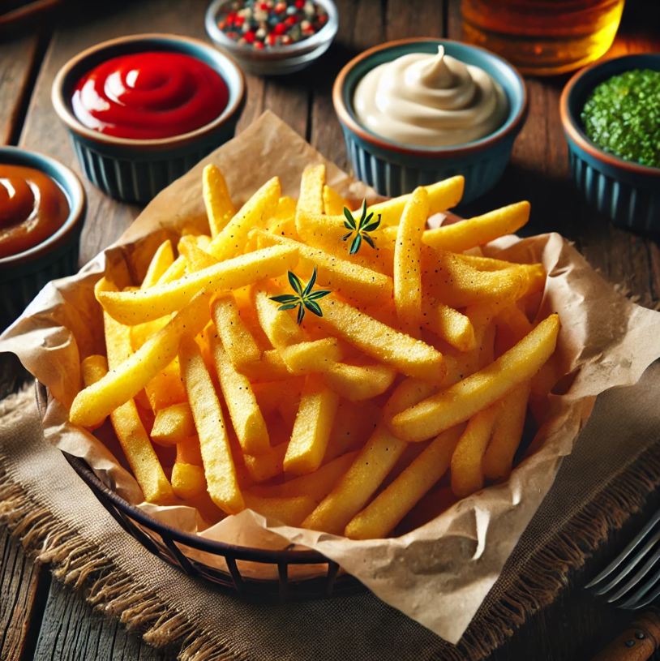
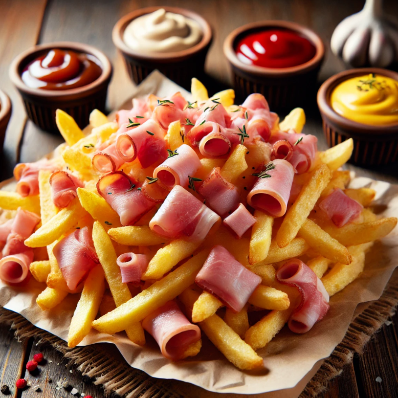
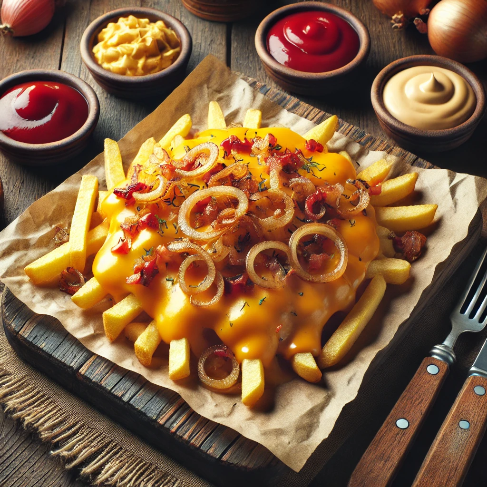
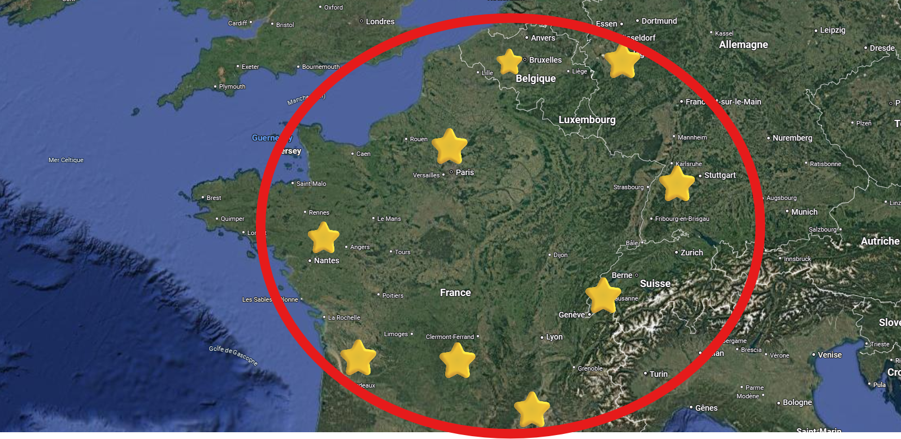

Our concept is simple: spreading our love for fried potato across Europe, via our Fritemobile. Discover our unique fry options and find us on the map. Join us on our journey to find the most delicious fry topping!
Our Fry Options

Our Classic Fries
The ancestral tradition of crispy, oil-fried fries. Golden and crispy, the classic fries are deep-fried to perfection, offering a crunchy exterior and a soft, fluffy interior. Served with a choice of dipping sauces, they are a timeless favorite for any fry lover.

Our Ham Fries
These delicious fries are topped with savory chunks of ham, perfectly complementing the crispy fries with a salty and rich flavor. A combination of textures and tastes, they're a hearty variation of the classic fry.

Our Cheese Onion Fries
Cheese onion fries are crispy, golden fries topped with gooey, melted cheddar cheese and caramelized onions. The combination of rich cheese and sweet, savory onions adds a deliciously indulgent flavor to the fries, making them a perfect comfort food option.
Find Us Here

We are moving across Europe following this itinerary. We start from Belgium; we continue with France and Switzerland; then we conclude the year 2025 with Germany
About Us
Learn more about Fritemobile and the passionate team behind the concept. Our mission is to share the love of fries with the world, offering a unique experience with each fry we serve.